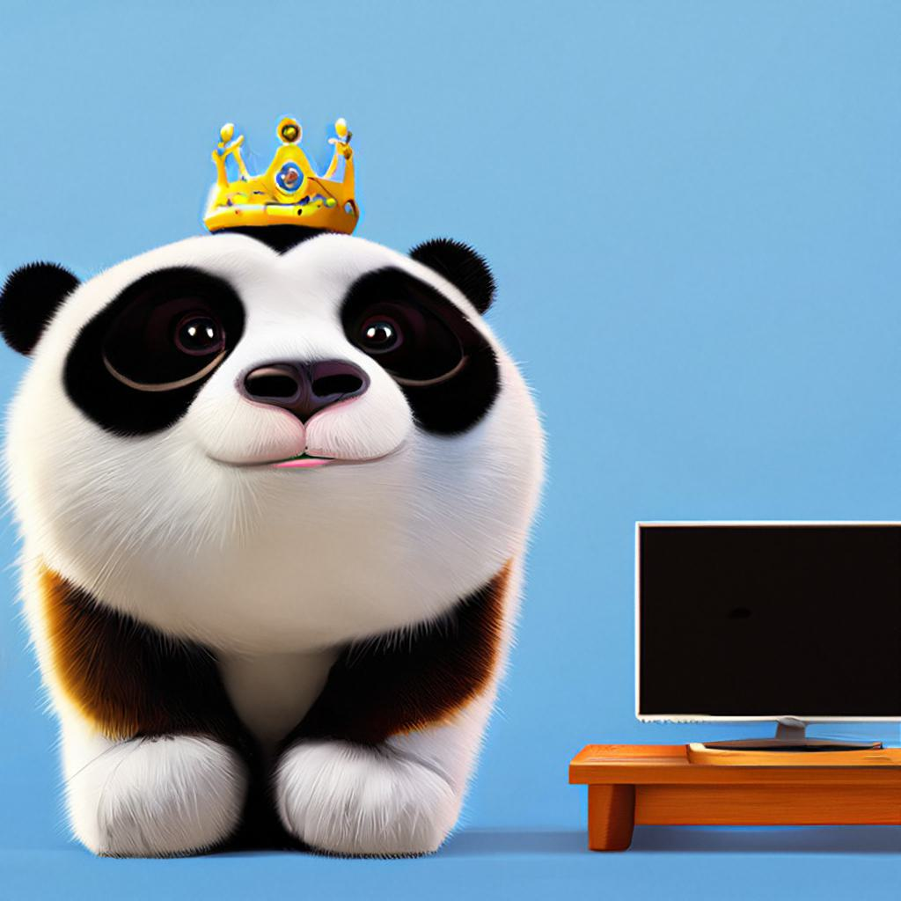
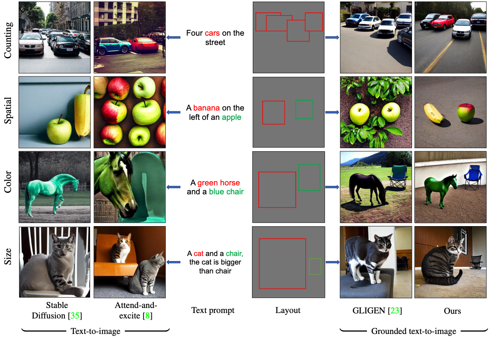
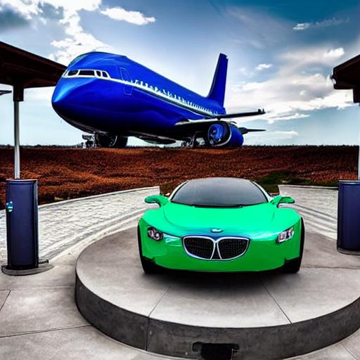
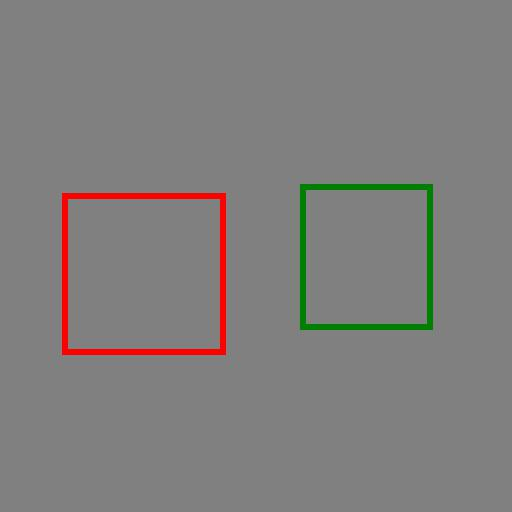
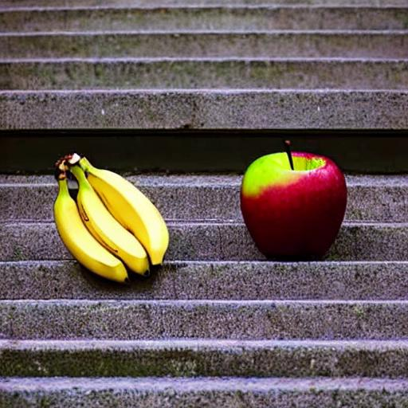
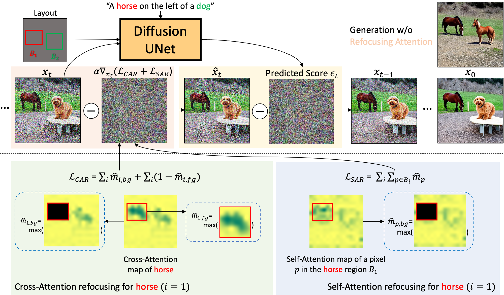

Animal:
Wearing:
Next to:

Abstract
Driven by scalable diffusion models trained on large-scale paired text-image datasets, text-to-image synthesis methods have shown compelling results. However, these models still fail to precisely follow the text prompt when multiple objects, attributes, and spatial compositions are involved in the prompt. In this paper, we identify the potential reasons in both the cross-attention and self-attention layers of the diffusion model. We propose two novel losses to refocus the attention maps according to a given layout during the sampling process. We perform comprehensive experiments on the DrawBench and HRS benchmarks using layouts synthesized by Large Language Models, showing that our proposed losses can be integrated easily and effectively into existing text-to-image methods and consistently improve their alignment between the generated images and the text prompts.
Our method improves image generation on counting, spatial, color, and size compositions

HRS benchmark [2]
Grounded Text-to-Image Synthesis with Attention-based Guidance
Anonymous

A blue airplane and a green car.
DrawBench [1]
Grounded Text-to-Image Synthesis with Attention-based Guidance
Anonymous


A banana on the left of an apple.
Attention refocusing framework
References
[1] Chitwan Saharia, William Chan, Saurabh Saxena, Lala Li, Jay Whang, Emily L Denton, Kamyar Ghasemipour, Raphael Gontijo Lopes, Burcu Karagol Ayan, Tim Salimans, et al. Photorealistic text-to-image iffusion models with deep language understanding. NeurIPS 2022.
[2] Eslam Mohamed Bakr, Pengzhan Sun, Xiaoqian Shen, Faizan Farooq Khan, Li Erran Li, and Mohamed Elhoseiny. HRS-Bench: Holistic, Reliable and Scalable Benchmark for Text-to-Image Models. arXiv preprint arXiv:2304.05390, 2023.
[3] Hila Chefer, Yuval Alaluf, Yael Vinker, Lior Wolf, and Daniel Cohen-Or. Attend-and-excite: Attention-based semantic guidance for text-to-image diffusion models.SIGGRAPH, 2023.
[4] HYuheng Li, Haotian Liu, Qingyang Wu, Fangzhou Mu, Jianwei Yang, Jianfeng Gao, Chunyuan Li, and Yong Jae Lee.. GLIGEN: Open-Set Grounded Text-to-Image Generation. CVPR, 2023.
[5] Omer Bar-Tal, Lior Yariv, Yaron Lipman, and Tali Dekel. Multidiffusion: Fusing diffusion paths for controlled image generation. ICML, 2023.
[6] Minghao Chen, Iro Laina, and Andrea Vedaldi. Training-Free Layout Control with Cross-Attention Guidance. arXiv preprint arXiv:2304.03373.